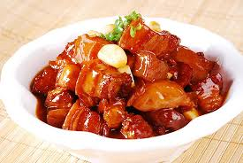

Braised pork belly

Description
Braised pork belly is a popular dish, particularly in Chinese cuisine, known for its tender, melt-in-your-mouth texture and rich, savory-sweet flavor[1][2]. The preparation typically involves slow-cooking thick slabs of pork belly until they are fork-tender[1].
Ingredients
- Pork Belly (with skin on)
- Sugar (rock sugar or brown sugar)
- Ginger
- Garlic
- Star Anise
- Bay Leaves
- Cinnamon Stick
- Soy Sauce (light and dark)
- Chinese Cooking Wine (e.g., Shaoxing wine)
- Water or Broth
- Cooking Oil
- Optional: Dried chili peppers, green onions, Szechuan peppercorns, five-spice powder, fried onions, beer, honey.
Steps
- Prepare the Pork Belly: Cut the pork belly into thick, uniform pieces. Blanch the pork belly in boiling water for a few minutes to remove impurities and blood. Drain and rinse the pork belly.
- Sear or Caramelize the Pork: Heat cooking oil in a wok or heavy-bottomed pot. Sear the pork belly pieces on all sides until golden brown. Alternatively, some recipes involve caramelizing sugar in the pot first, then adding the pork to coat it in the caramelized sugar.
- Add Aromatics and Spices: Add chopped ginger, garlic, star anise, cinnamon stick, bay leaves, and any other desired spices to the pot. Sauté for a minute until fragrant.
- Add Liquids and Seasonings: Pour in the soy sauce, Chinese cooking wine, and water or broth. Ensure the liquid mostly covers the pork belly. Add sugar and stir to dissolve.
- Braise the Pork: Bring the liquid to a boil, then reduce the heat to low, cover the pot, and simmer for at least 1.5 to 2 hours, or until the pork belly is very tender and can be easily pierced with a fork. Stir occasionally.
- Reduce the Sauce: Once the pork is tender, remove the lid and increase the heat slightly. Let the sauce simmer and reduce until it thickens and coats the pork belly.
- Rest and Serve: Allow the braised pork belly to rest for a few minutes before slicing or serving. It is often served with its rich braising sauce.
Home